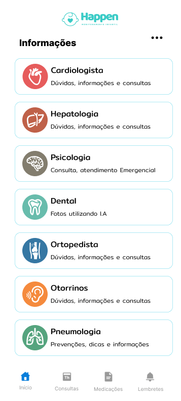
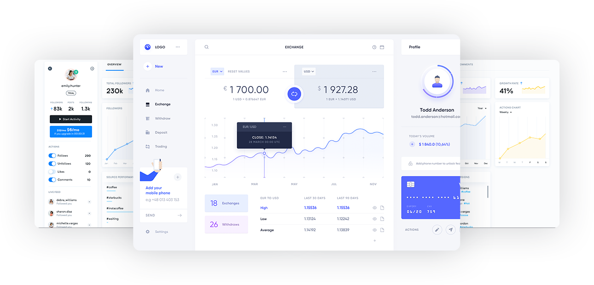

Partner Companies

Our Solution


HAPpy + Protection + Child
Our proposal is to create an application that serves as an individual health record for each child in the family, where guardians can daily provide information about the children's health conditions.
When necessary, guardians can use the application to ask questions about health conditions and request virtual or in-person medical assistance, based on the identified level of emergency.
When requesting medical assistance, the graphs of the data collected daily about the patient's health conditions will be shared with the pediatrician. The diagnosis given by the professional, the exams requested, the prescribed medications, and the return date will also be attached to the child's medical record within the app, so that guardians have access to the history.
By crossing data from symptoms, daily physical conditions, medical diagnoses, treatments, or prescribed medications, and the evolution of the health condition, we intend, anonymously, that is, the patient's personal data will be preserved, to feed an artificial intelligence database that in the long run can identify health patterns, anticipate possible diagnoses, and prevent serious causes of infant deaths.
Know all our
features
Monitoring
- Periodic sending of notifications for health condition registration, before and after appointments
- Dashboard of provided data with probability indications.
- Attachments: exams, consultation histories, medical prescriptions, and post-consultation follow-up.
Emergency – Chatbot
- Help for first aid, with suggestions for immediate actions, techniques, and procedures, regulated by PHTLS.
- Quick triage on the way to the emergency room, streamlining the severity validation process.
- Request for emergency assistance for online and in-person consultations.
Data Crossing
- Artificial intelligence fed with data entered in the application, generating data control for both parties
- Progressive learning of this intelligence to generate predictions and preventions, generating graphs and reports
- History of symptoms and medications and the relationship between them
Know our
App
-

Questions and Answers
Main Questions
Who has access to the reports?
What information is collected?
Can I have more than one guardian?
Is the app paid?
Connection with Voice Assistants
Can I register more than 1 child
Easy access
in the palm of your hand
Guardians have direct access to an application!
History of symptoms and medications, guardians have full access to all information provided, including medical prescriptions, predicted doses!
Intuitive Dashboard with
all organized information

Access to patient history
The doctor, nurse, or person in charge of the care, has access to the entire history provided by the patient's guardian in the APP
Analysis and Graphs
Just as guardians have access to analyzes and graphs about the child, health professionals will have access to reports on disease and/or symptom trends
Information even after care
Follow the results of your patients even after your care, have the result of prescribed medications! Thus, having an analysis from symptoms to case resolution